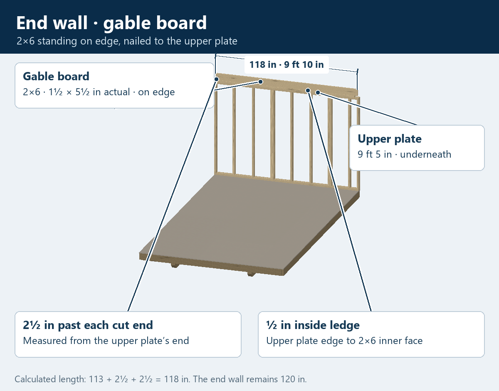
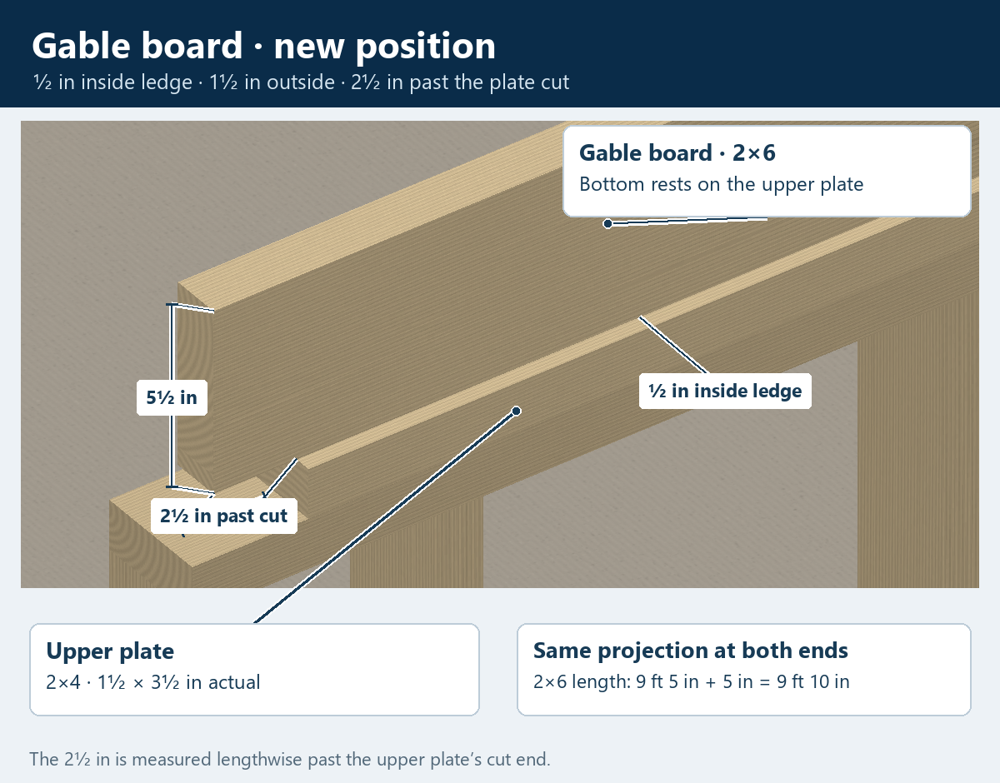

10 × 16 · End wall · Starting the gable
Gable board
The 2×6 gable board stands on its narrow edge, on top of the upper plate, and is nailed to it. It follows the end wall, with a ½-inch ledge on the inside and 2½ inches past each cut end of the upper plate.
The upper plate is 113 inches long. Adding both end projections gives 113 + 2½ + 2½ = 118 inches, or 9 feet 10 inches.
End wall with the gable board

Inside ledge and cut end

Measurements
- 2×6 actual section
- 1½ inches thick and 5½ inches high, standing on edge.
- Calculated board length
- 118 inches · 9 feet 10 inches.
- Projection at each end
- 2½ inches beyond the upper plate's cut end.
- Inside ledge
- ½ inch, measured between the two inner faces.
- Calculated height above flooring
- 79½-inch wall + 5½-inch board = 85 inches.
Gable board is the confirmed name. The 2×4 truss sits on top of it, and the outward-facing gable studs sit on it at 24 inches on center. Those pieces are the next step; the pictures currently show the gable board and its fit. Wood treatment and the nail schedule remain unspecified.
Truss measurements learned next
- Truss lumber
- 2×4 nominal · 1½ × 3½ inches actual.
- Upper piece leading to the peak
- 54 inches, measured from longest point to longest point.
- Lower, steeper piece
- 37¾ inches, measured from longest point to longest point.
- Height to the peak
- 4 feet · 48 inches from the top of the gable board to the highest point of the peak.
The separate 6¼-inch measurement from the farthest truss point to the upper plate still needs its exact reference and direction. These measurements are saved; the truss is not yet shown in the pictures.